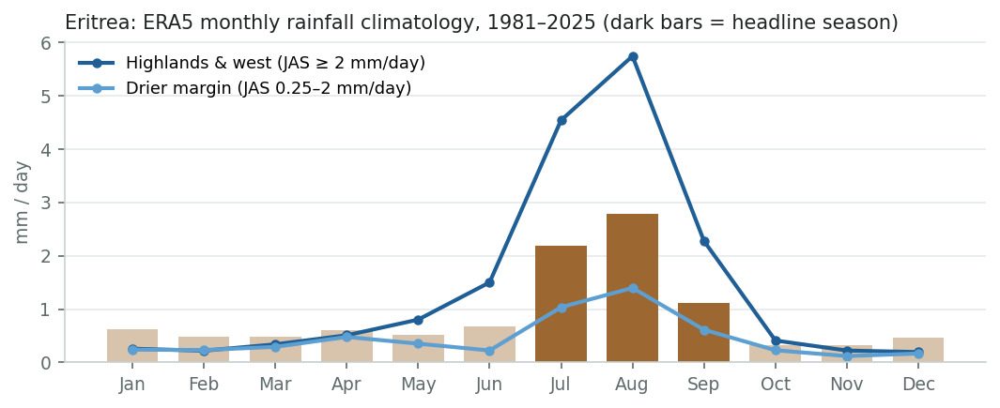
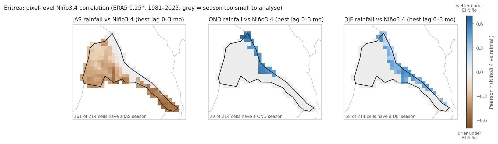
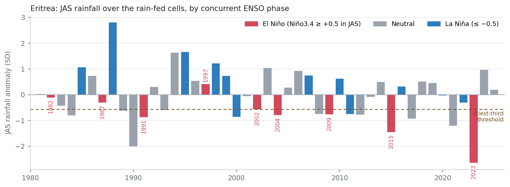
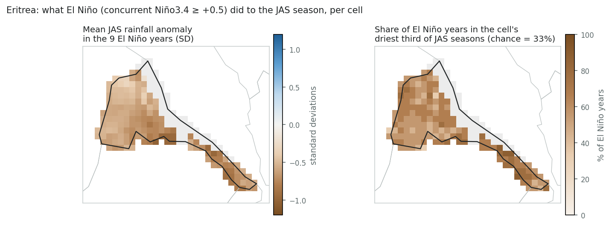

ENSO country deep dive
Survey catalogue says
El Niño → drier, JJAS kiremti
robust source: Dai & Wigley 2000 (GRL), inherited from the Ethiopia / Sudan highlands row
This review assesses
El Niño → drier inland; wetter on the coast, JJAS inland · OND–DJF coast
moderate Direction well supported by the Ethiopian kiremt literature; Eritrea-specific evidence is thin and the ERA5 amplitude is moderate, with a strong north–south gradient.
Bottom line. The survey catalogue grades Eritrea robust for El Niño → drier JJAS rains. That grade was never earned by Eritrea-specific evidence: it was inherited from the regional row for the Ethiopian, Sudanese and South Sudanese highlands. The direction is right — Eritrea's kiremti rains are the northern tail of Ethiopia's kiremt system — but the Eritrea-specific literature is thin, and ERA5 shows a moderate signal (country JAS r ≈ −0.41) that is strong only along the Tigray border and fades to near nothing in the northern highlands around Anseba. The Red Sea coast responds the opposite way in its winter rains.
For drought. The correlation understates the drought relevance because the response is asymmetric. Of the nine El Niño kiremti seasons since 1981, five landed in the driest third (1991, 2004, 2009, 2015, 2023) and four in the driest fifth; 2023 was the driest season in the whole record. But three El Niño years (1982, 1987, 1997) were near normal or wet, and eight of the fifteen driest seasons were ENSO-neutral. El Niño roughly doubles the odds of a bad kiremti; it explains about a third of them.
Recommendation. Regrade to moderate, cite the Ethiopia/Eritrea-specific studies rather than a global composite, and mark the country bidirectional (JJAS drier inland, OND–DJF wetter on the coast), as Ethiopia and Yemen already are.
The literature map was built region by region. Eritrea sat inside the Horn of Africa block with Djibouti, Sudan and South Sudan, and the whole block took the grade of one regional finding: “Ethiopia / Sudan / S. Sudan highlands — JJAS kiremt / Blue Nile — El Niño drier — Robust”, sourced to Dai & Wigley (2000). That paper is a global 2.5° empirical-orthogonal-function composite of ENSO-related precipitation; it shows the Sahel-to-Ethiopia summer drying belt but says nothing specific about Eritrea.
Two consequences follow. First, the per-country catalogue row for Eritrea carries a single global citation and a “gap vs NOAA/IRI” badge that both belong to the Ethiopian row. Second, the confidence shading on the map (dark brown = robust) tells a reader that the Eritrean link is as well replicated as Ethiopia's, which the evidence below does not support.
The regional mechanism is solid. Ethiopia's June–September kiremt rains are among the best-documented ENSO teleconnections in Africa. Korecha & Barnston (2007) find a strong negative correlation between kiremt rainfall and tropical Pacific SST and use Niño3.4 as the leading predictor; Gleixner et al. (2017) show the mechanism (warm Pacific SST → weaker Tropical Easterly Jet and East African low-level jet → subsidence over the highlands); Segele & Lamb (2005) and Diro et al. (2011) replicate the sign across station networks. The Eritrean highlands and western lowlands receive their kiremti rains from the same monsoon flow, so a drying tendency under El Niño is physically expected.
Eritrea-specific evidence is thin. The one study that treats Eritrea directly is Seleshi & Demarée (1995), which relates rainfall indices for the north-central Ethiopian and Eritrean highlands over 1900–1990 to the Southern Oscillation Index and finds main-season droughts more likely in warm-ENSO years. A later Eritrean-highlands study finds Indian Ocean SST, not the Pacific, to be the strongest predictor of July–August rainfall at Asmara and Mendefera. Nicholson's (2017) review of eastern African rainfall characterises the ENSO link to the summer rains of northern Ethiopia and Eritrea as much weaker than in the rest of the region.
The coast is a different climate. The Red Sea coastal plain and the eastern escarpment get their rain in winter (roughly October–February), from onshore flow over the Red Sea rather than the summer monsoon. The Horn's winter and short-rains season is wetter under El Niño, and ERA5 reproduces that here with correlations above +0.5, a signal the country-level survey cannot show because those months are a small share of the national total.
Operational record. The 2015 El Niño produced a widely reported Eritrean drought: FAO GIEWS recorded kiremti rainfall below the long-term average in most of Maekel, Gash Barka, Anseba and eastern Debub, and a UN rapid assessment in Anseba and Northern Red Sea found that about 90% of the areas that normally flood for spate irrigation did not. The 2023 El Niño coincided with the driest ERA5 kiremti in the 45-year record.
Taken together: direction robust by regional analogy, amplitude and Eritrea-specific replication moderate. That is the definition of the catalogue's moderate grade.
Everything in this section is computed from the same ERA5 monthly grid and NOAA Niño3.4 index the survey uses, restricted to the cells inside the country. A cell–season is analysed only if that season holds at least a quarter of the cell's annual rainfall and averages at least 0.25 mm/day (the survey's rainy-season and aridity filters).
Eritrea is a summer-rain country in the aggregate: July–September carries about 58% of the annual total over the average cell, and the June–September kiremti nearly all of it. The winter rains that matter on the coast (October–February) are only 10–16% of the national mean, which is why the survey's 25% rainy-season filter drops them at country level.

At pixel level the summer signal is real but moderate and strongly graded from south to north. Along the Tigray border and in the south-east the correlation reaches −0.5 or below; across the central highlands it sits around −0.3; in the northern highlands around Anseba and the north-west it weakens to −0.15 to −0.25, below the survey's colour threshold. Only about one cell in eight clears the survey's “strong” bin. In the winter windows the coastal cells respond the opposite way, with OND correlations above +0.5 in every analysable cell.
This is why the survey's pixel map looks mixed: in the default view (pixel, unique signal, 3-month lag) Eritrea shows a patchwork of moderate brown inland, blue on the coast, and blanks where no season passes the filters.

| Season | Cells analysed | Share of annual rain | Median r | Range | Significant (p<0.05) | |r| ≥ 0.30 | |r| ≥ 0.50 |
|---|---|---|---|---|---|---|---|
| JAS | 161 / 214 | 58% | −0.35 | −0.57 to +0.07 | 70% negative | 69% | 12% |
| OND | 29 / 214 | 11% | +0.53 | +0.46 to +0.65 | 100% positive | 100% | 72% |
| DJF | 58 / 214 | 16% | +0.40 | +0.16 to +0.55 | 79% positive | 78% | 10% |
Averaged to a national series the JAS signal is −0.41 (best at a one-month lead, i.e. June–August Niño3.4 against July–September rain), against −0.63 for Ethiopia and −0.59 for South Sudan. The concurrent JJA correlation misses significance and the partial correlation (other modes held constant) drops to −0.27. The strongest correlations in the table are the winter ones, and they are positive.
| Trimester | Share of annual rain | Total r (best lag) | Lag (mo) | p | Unique-signal r (partial) |
|---|---|---|---|---|---|
| NDJ filtered * | 14% | +0.55 | 0 | 0.000 | +0.40 |
| DJF filtered * | 16% | +0.49 | 0 | 0.001 | +0.44 |
| JFM filtered * | 16% | +0.29 | 1 | 0.058 | +0.15 |
| FMA filtered * | 15% | +0.24 | 2 | 0.119 | +0.05 |
| MAM filtered * | 15% | +0.18 | 0 | 0.243 | +0.22 |
| AMJ filtered * | 16% | +0.15 | 3 | 0.333 | +0.19 |
| MJJ | 31% | +0.19 | 3 | 0.215 | +0.35 |
| JJA | 52% | −0.29 | 0 | 0.056 | −0.09 |
| JAS | 58% | −0.41 | 1 | 0.005 | −0.27 |
| ASO | 41% | −0.31 | 2 | 0.042 | −0.29 |
| SON filtered * | 18% | +0.17 | 0 | 0.263 | −0.01 |
| OND filtered * | 11% | +0.58 | 0 | 0.000 | +0.18 |
* Below the survey's rainy-season filter (trimester climatology under 25% of the annual mean), so the survey never shows these correlations at country level; they are listed here because the coastal winter signal is part of the story.
Drought is where the signal earns its keep. A Pearson r describes a symmetric linear relationship; the kiremti response to ENSO is not symmetric. La Niña years are reliably wet (only two of twelve in the driest third), while El Niño years split: five of nine were in the driest third and four in the driest fifth, but 1982, 1987 and 1997 were near normal or wet — 1997, the strongest event of the period, did not produce a highland drought. Neutral years supply most droughts in absolute terms, including the severe 1990, 2017 and 2021 seasons.
Read as odds: an El Niño roughly doubles the chance of a driest-third kiremti (about 55% against a 33% base rate) and quadruples the chance of a driest-fifth one, but an El Niño forecast alone would have missed two thirds of the bad seasons. It is a useful readiness signal, not a trigger.

| ENSO phase (concurrent) | Seasons | Mean anomaly (SD) | In driest third | In driest fifth | In wettest third |
|---|---|---|---|---|---|
| El Niño | 9 | −0.78 | 56% | 44% | 0% |
| Neutral | 24 | −0.01 | 33% | 17% | 33% |
| La Niña | 12 | +0.60 | 17% | 8% | 58% |
| Year | Niño3.4 (JAS) | Rainfall anomaly (SD) | Rank (1 = driest) | Outcome |
|---|---|---|---|---|
| 1982 | +0.86 | −0.11 | 20 of 45 | near normal |
| 1987 | +1.50 | −0.30 | 19 of 45 | near normal |
| 1991 | +0.62 | −0.86 | 6 of 45 | driest fifth |
| 1997 | +1.86 | +0.41 | 29 of 45 | near normal |
| 2002 | +0.90 | −0.56 | 16 of 45 | near normal |
| 2004 | +0.69 | −0.79 | 9 of 45 | driest fifth |
| 2009 | +0.57 | −0.76 | 11 of 45 | driest third |
| 2015 | +1.87 | −1.45 | 3 of 45 | driest fifth |
| 2023 | +1.32 | −2.63 | 1 of 45 | driest fifth |
The 15 driest-third JAS seasons: 1984 (Neutral), 1989 (Neutral), 1990 (Neutral), 1991 (El Niño), 1993 (Neutral), 2000 (La Niña), 2004 (El Niño), 2008 (Neutral), 2009 (El Niño), 2011 (La Niña), 2012 (Neutral), 2015 (El Niño), 2017 (Neutral), 2021 (Neutral), 2023 (El Niño). Phase split: Neutral 8, El Niño 5, La Niña 2.

| Zone (by JAS climatology) | Cells | El Niño composite (median SD) | El Niño years in driest third (median) |
|---|---|---|---|
| Highlands & west (JAS ≥ 2 mm/day) | 79 | −0.65 | 56% |
| Drier margin (JAS 0.25–2 mm/day) | 82 | −0.57 | 67% |
_LIT_EVIDENCE, and replace the Dai & Wigley citation on its catalogue row with Seleshi & Demarée (1995) and Korecha & Barnston (2007).Generated by enso_deep_dive.py from deep_dives/eri.toml. Method and data as in the global survey.